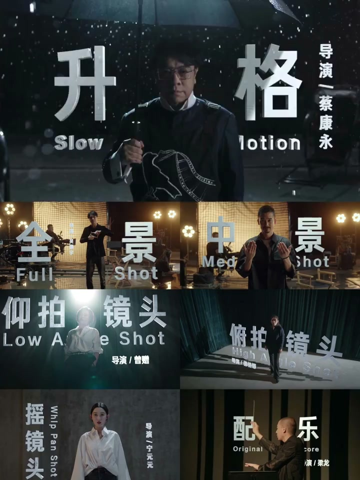
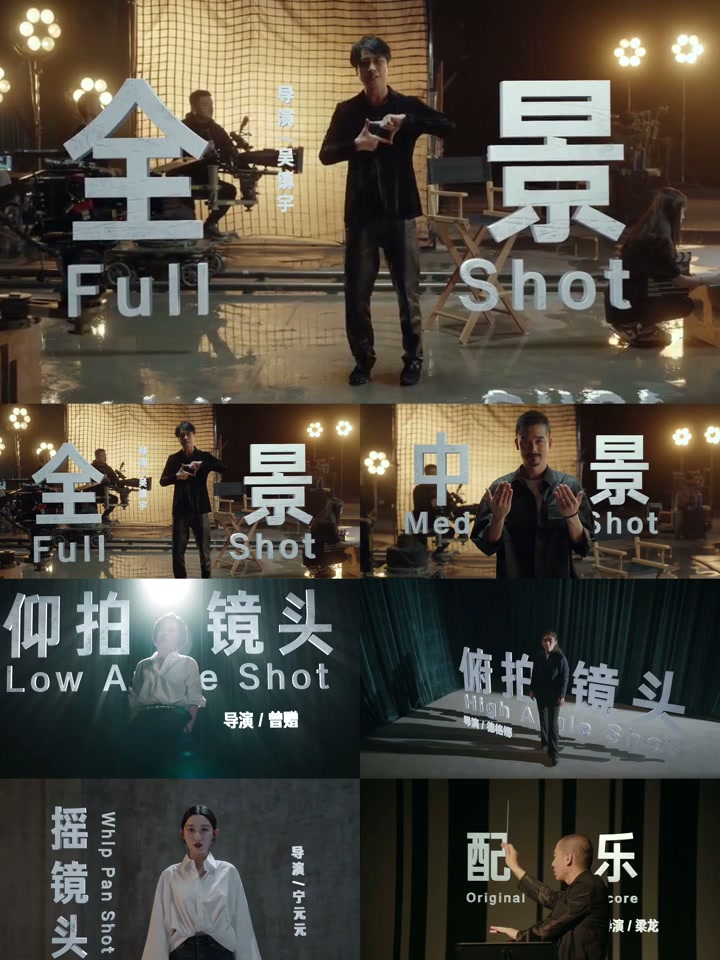
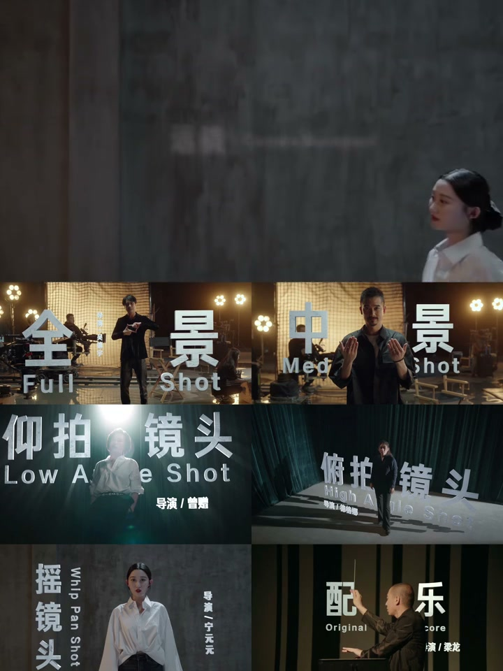
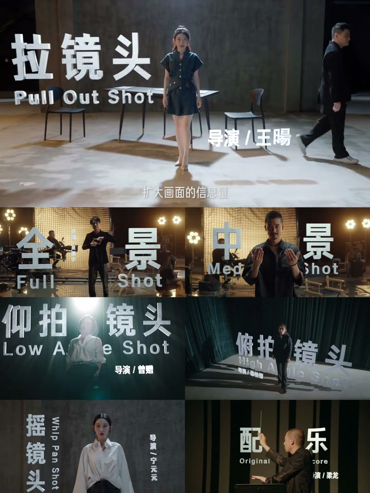
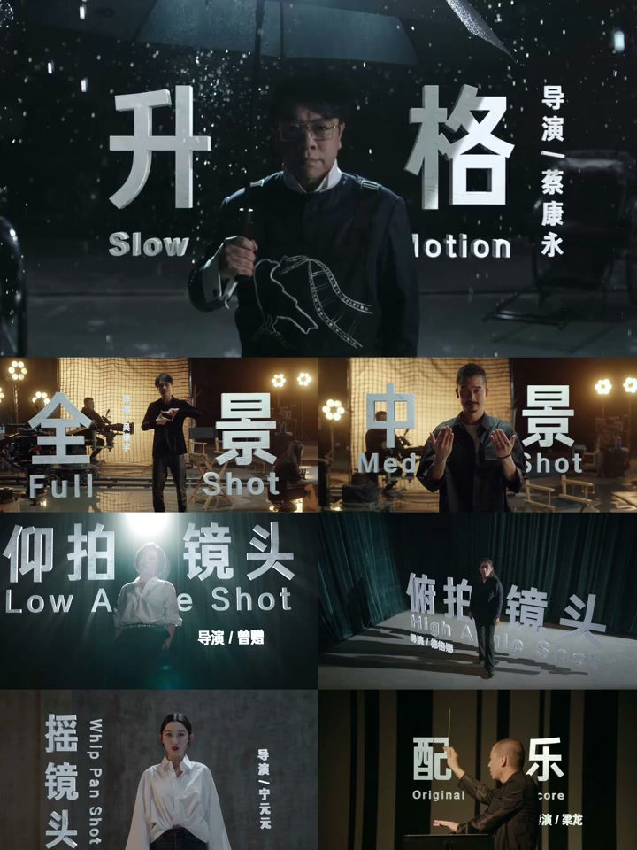

内容要点
[00:00] 来 传警
[00:01] 讲是人物的整顶
[00:04] 中拳紧 膝上
[00:06] 适合表达人物的动作
[00:08] 以及周遭的关系
[00:09] 中紧 腰上
[00:11] 利于强调人物本身的叙事
[00:14] 紧紧 减少 减少注意力分散
[00:18] 他写出乎人与面目情绪
[00:22] 贴地角度看不到人物的整顶
[00:24] 他写出乎人与面目的整顶
[00:28] 贴地角度看不到我是谁
[00:30] 要的就是这种神秘感
[00:33] 两拍镜头 彰显主体的力量
[00:35] 五拍镜头 削弱被拍摄者的力量
[00:38] 鸟看镜头 彰显出 审判感
[00:43] 摇 建立不同人物之间的联系
[00:46] 以换个时间换个地点
[00:48] 完成空间的过渡
[00:50] 推 展示更多的细节
[00:53] 对 太幸运了
[00:55] 拉 扩大画面信息量
[00:57] 让场景更具张力
[00:59] 跟踪镜头 强调风险感
[01:01] 仿佛之身 场景不中
[01:04] 让观众沉浸和陷入场景
[01:09] 深格 通过拉长细致时间
[01:12] 增加了细节的颗粒度
[01:15] 转正即逝 却又不可错过
[01:21] 降格可以制造强烈的模糊
[01:24] 和流光效果
[01:25] 也是墨镜王的惯用技巧
[01:39] 灯光色彩可以表达人物情绪
[01:42] 也可以渲染氛围
[01:56] 配御是画面的读费
[01:59] 万物经有值得的读费
[02:09] 飞机 实现导演天马行空的想象
[02:15] 让技术服务艺术
[02:16] 跑的特效已被观众发现
[02:20] 让技术服务艺术
[02:21] 跑的特效已被观众发现
[02:35] 中人皆可创作的时代
[02:38] 你觉得什么是道理
[02:49] 让技术服务艺术
[02:50] 跑的特效已被观众发现




